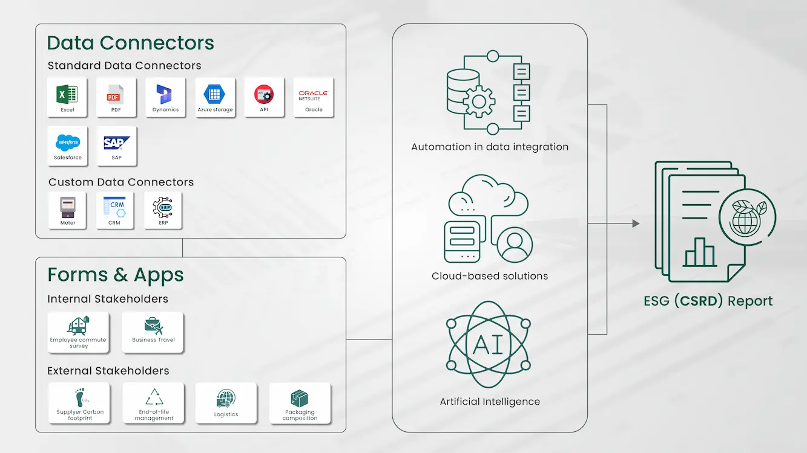

In today's business landscape, Environmental, Social, and Governance (ESG) reporting has become a critical component of corporate strategy. Governments and regulatory bodies across the world have come up with reporting standards for companies to disclose their ESG performance. Meeting multiple regulatory reporting requirements and ESG frameworks can be complex and resource- intensive for companies. Traditional reporting methods involve a lot of manual intervention dealing with scattered, inconsistent and inaccurate data which becomes a challenge to ensure timeliness and reliability. Consequently, it can hinder a company's ability to provide transparent, comprehensive ESG disclosures. At such a crucial juncture, technology comes in aid offering innovative solutions to streamline the data aggregation process, enhance accuracy, and provide actionable insights.
Technology Trends in ESG Reporting
With the growing demand to integrate technology into ESG reporting, many advanced technologies are now being utilized to simplify and enhance the reporting process.
Automation in data integration
Automation technologies and integrated platforms are revolutionizing ESG reporting software by aggregating data from various sources, including internal systems, third-party databases, and other standard applications used within an organization. Automated data collection improves accuracy and dramatically reduces the time required for data collection. Our platform ecoPRISM streamlines ESG data collection with standard, market and custom integrations through a one-time configuration process, automating and simplifying data aggregation.

Cloud-based solutions
Cloud-based solutions provide scalable and flexible platforms for ESG data management. These solutions enable real-time data access and reporting, enable collaboration across different departments and locations, and support the integration of various ESG metrics and standards. ecoPRISM is a cloud-based SaaS platform hosted in Microsoft Azure that facilitates multiple users' real-time work real-time on ESG data analysis and reporting.
Artificial Intelligence
Artificial Intelligence (AI) is transformative in ESG reporting as it can analyse large datasets to identify trends, and patterns, conduct benchmarking exercises, simulate future scenarios, and generate advance insights. It can discover best practices globally and provide recommendations to improve ESG performance. AI can also assist in automating the generation of reports, ensuring compliance with various reporting standards. ecoPRISM uses AI to generate qualitative responses for CSRD Compliance reporting and has a dedicated in-house chat feature Ecobot, to answer all your queries related to CSRD.
Best Practices for Tech-Driven ESG Reporting
- Define clear ESG goals - Establishing clear objectives on a company's ESG journey clarifies the topics to be communicated to the stakeholders. This includes identifying the key metrics most relevant to stakeholders and aligning them with the overall business strategy.
- Choose the right ESG technology - Based on the company's ESG goals, choosing the right technology helps seamless operations. The solutions must offer scalability, integration capabilities, user-friendliness and good customer support. The platforms should provide frequent updates to keep up with the evolving ESG regulatory landscape.
- Capacity building - Ensure the platform's team members are well-equipped and trained. Proper documentation of the platform's key features and use cases helps ensure business continuity.
- Ensure accuracy and consistency - Implement robust data governance practices to ensure the accuracy, consistency, and reliability of your ESG data. This includes regular data audits, validation processes, and standardized data formats.
- Leverage advanced analytics - Usen the platform to gain advanced insights on the ESG performance. These tools can help benchmark performance internally, set and monitor ESG targets, simulate future scenarios to form sustainability management strategies, identify areas for improvement, and devise action plans.
Conclusion
The role of technology in ESG reporting has become inevitable in the current scenario. As the demand for transparency and accountability grows, leveraging advanced technologies can streamline the reporting process, enhance data accuracy, improve transparency, and ensure the credibility of ESG reports. By adopting best practices and staying on top of modern technological advancements, companies can meet regulatory requirements, drive sustainable growth, and build stronger relationships with their stakeholders. Embracing technology in ESG reporting is a strategic move that paves the way for a more sustainable and responsible future.
ESG Reporting with ecoPRISM's Comprehensive Solution
To streamline your ESG reporting and enhance sustainability strategies, consider leveraging ecoPRISM's comprehensive platform and services. ecoPRISM offers integrated solutions for seamless data aggregation and insightful reporting, addressing the multifaceted challenges faced by sustainability leaders.
With expertise in sustainability excellence, tailored solutions, and robust data security, ecoPRISM empowers businesses to stay compliant with evolving regulations, align with stakeholder expectations, and drive strategic, data-driven decisions.
Explore ecoPRISM's ESG reporting solution to transform your sustainability journey into a strategic advantage, ensuring a responsible and brighter future.